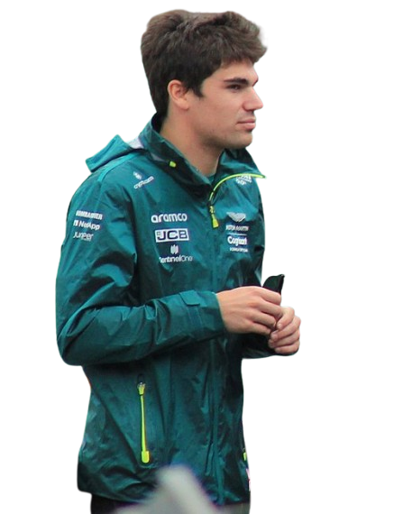
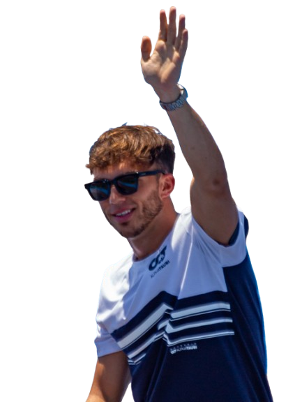
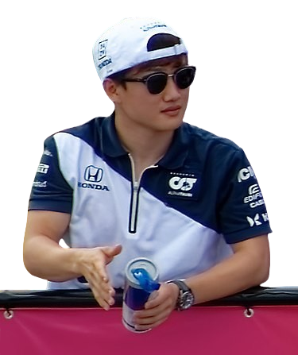
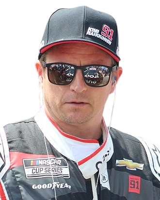
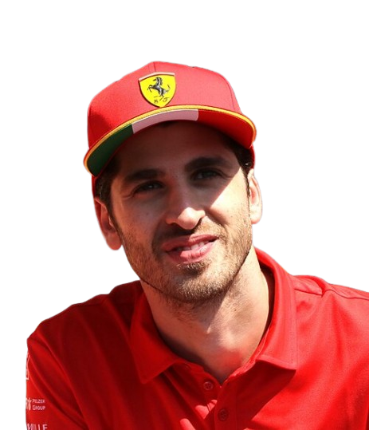
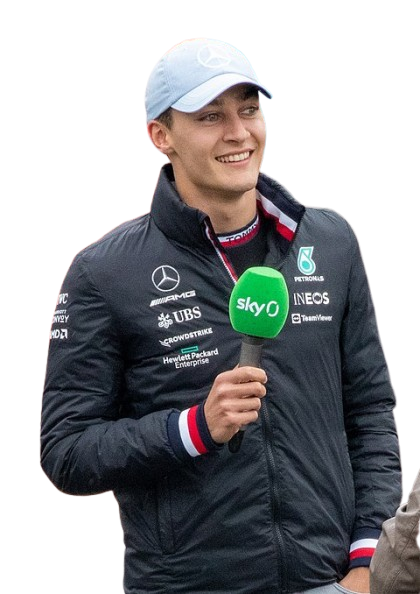
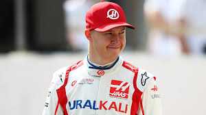

Mercedes AMG Petronas

Lewis Hamilton
Siete veces campeón mundial, piloto británico reconocido por su dominio con Mercedes.
Lewis Hamilton es un piloto británico, siete veces campeón mundial (2008, 2014–2015, 2017–2020). Es el piloto con más victorias (105), poles (104) y podios en la historia de la F1. Activista por la diversidad y el medio ambiente, fue nombrado caballero en 2021. En 2025, se unió a Ferrari tras una histórica etapa con Mercedes.

Valtteri Bottas
Piloto finlandés, compañero constante de Hamilton entre 2017 y 2021
Piloto finlandés que fue clave en el dominio de Mercedes junto a Hamilton. Con múltiples podios y poles, es reconocido por su consistencia y profesionalismo. Desde 2022 compite con Alfa Romeo.
Red Bull Racing Honda

Max Verstappen
Piloto neerlandés, campeón del mundo en 2021, conocido por su estilo agresivo.
Campeón mundial en 2021, 2022 y 2023, Verstappen es conocido por su estilo agresivo y talento natural. Es el líder de Red Bull y uno de los pilotos más dominantes de la era moderna.

Sergio Pérez
Piloto mexicano con varias victorias y experiencia en equipos como Sauber y Force India.
Piloto mexicano con victorias clave para Red Bull. Experto en gestión de neumáticos y remontadas, ha sido pieza fundamental en el campeonato de constructores del equipo.
McLaren

Lando Norris
Joven piloto británico, popular por su consistencia y carisma.
Joven británico de McLaren, popular por su carisma y talento. Ha logrado múltiples podios y es considerado uno de los futuros campeones del deporte.

Daniel Ricciardo
Piloto australiano famoso por sus adelantamientos y victorias con Red Bull.
Conocido por su sonrisa y estilo de adelantamiento, Ricciardo ha ganado carreras con Red Bull y McLaren. Su regreso a la F1 tras una pausa fue muy celebrado por los fans.
Ferrari

Charles Leclerc
Piloto monegasco, rápido y consistente, estrella joven de Ferrari.
Estrella de Ferrari, Leclerc ha logrado poles y victorias desde su debut. Es considerado uno de los pilotos más rápidos a una vuelta y un contendiente al título.

Carlos Sainz Jr
Piloto español, ha corrido para varios equipos y se adaptó rápidamente a Ferrari.
Piloto español que ha demostrado gran adaptabilidad en equipos como Toro Rosso, Renault, McLaren y Ferrari. Ganó su primera carrera en 2022.
Alpine Renault

Fernando Alonso
Bicampeón mundial español, volvió a la F1 con experiencia y habilidad.
Bicampeón mundial (2005, 2006), Alonso es uno de los pilotos más experimentados y respetados. Su regreso a la F1 con Aston Martin ha sido impresionante.
Esteban Ocon
Piloto francés, ganó su primera carrera en Hungría 2021.
Ganador del GP de Hungría 2021, Ocon es un piloto francés con gran talento y determinación. Ha sido clave en el desarrollo del equipo Alpine.
Aston Martin Mercedes

Sebastian Vettel
Cuatro veces campeón del mundo con Red Bull, pasó a Aston Martin en su etapa final.
Cuatro veces campeón mundial con Red Bull (2010–2013), Vettel es uno de los grandes de la F1. También es conocido por su activismo ambiental y liderazgo dentro del paddock.

Lance Stroll
Piloto canadiense, hijo del dueño del equipo, con varios podios.
Piloto canadiense con varios podios. Hijo del dueño de Aston Martin, ha demostrado velocidad y habilidad en condiciones cambiantes.
AlphaTauri Honda

Pierre Gasly
Piloto francés, ganó el GP de Italia 2020 con AlphaTauri.
Ganador del GP de Italia 2020 con AlphaTauri, Gasly es un piloto francés con gran capacidad de recuperación y talento puro.

Yuki Tsunoda
Piloto japonés joven, promocionado desde Fórmula 2.
Joven japonés promovido desde F2, Tsunoda ha mostrado velocidad y carácter. Es parte del programa de desarrollo de Red Bull.
Alfa Romeo Racing Ferrari

Kimi Räikkönen
Campeón mundial 2007, uno de los pilotos más veteranos y queridos.
Campeón mundial 2007, “Iceman” es una leyenda de la F1. Conocido por su estilo directo y talento natural, compitió hasta 2021.

Antonio Giovinazzi
Piloto italiano, corrió con Alfa Romeo durante tres temporadas.
Piloto italiano que corrió con Alfa Romeo entre 2019 y 2021. También ha competido en Fórmula E y como piloto de pruebas para Ferrari.
Williams Mercedes

George Russell
Talentoso piloto británico, destacó con Williams y pasó luego a Mercedes.
Británico que brilló en Williams y se unió a Mercedes en 2022. Ganó su primera carrera en Brasil 2022 y es considerado un futuro campeón.

Nicholas Latifi
Piloto canadiense, conocido por su paso por Williams.
Piloto canadiense que compitió con Williams. Aunque sin podios, fue constante y profesional durante su paso por la F1.
Haas F1 Team
Mick Schumacher
Hijo del legendario Michael Schumacher, piloto alemán en sus primeros años.
Hijo del legendario Michael Schumacher, Mick compitió con Haas y es piloto reserva de Mercedes. Campeón de F2 en 2020.

Nikita Mazepin
Piloto ruso, corrió una temporada con Haas.
Piloto ruso que corrió una temporada con Haas en 2021. Su paso por la F1 fue breve y polémico, pero dejó huella por su estilo agresivo.